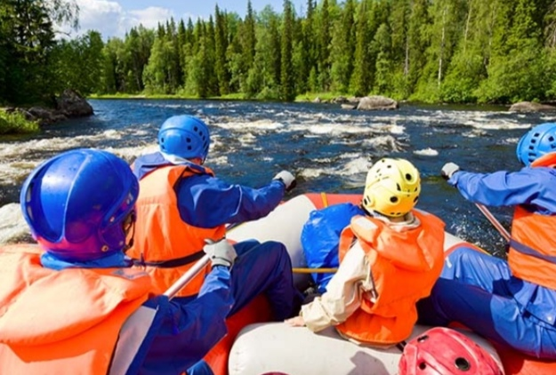
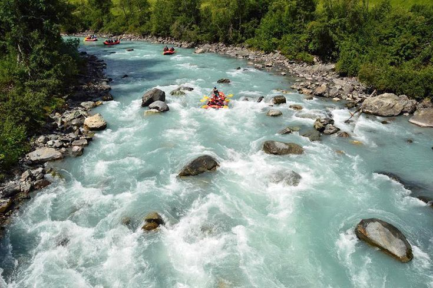
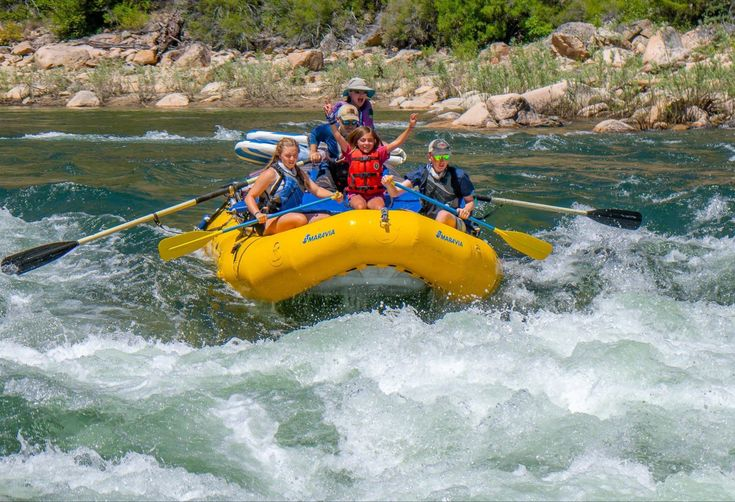
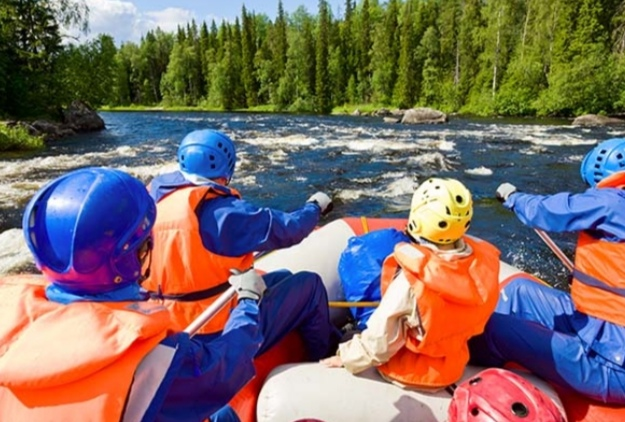
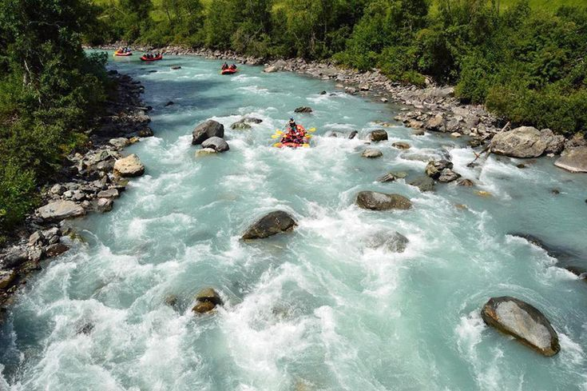
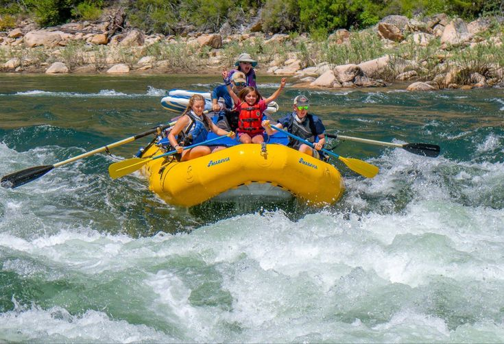

our mission is to provide exhilarating and safe white-water rafting experiences that connect people with the beauty and power of nature. We believe in creating unforgettable adventures that foster a sense of camaraderie, challenge personal limits, and inspire a deep appreciation for the natural world. Our purpose is to offer more than just a thrilling ride down the river. We aim to cultivate a community of adventurers who share a passion for the outdoors and a commitment to preserving our rivers for future generations. Through our guided excursions, we strive to educate and empower our guests, promoting environmental stewardship and sustainable practices.
 




